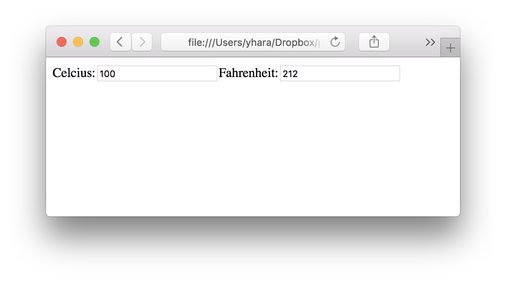

Ovto
Client-side web framework for Opal, inspired by hyperapp
Documents
Example

require 'ovto'
class MyApp < Ovto::App
class State < Ovto::State
item :celsius, default: 0
def fahrenheit
(celsius * 9 / 5.0) + 32
end
end
class Actions < Ovto::Actions
def set_celsius(state:, value:)
return {celsius: value}
end
def set_fahrenheit(state:, value:)
new_celsius = (value - 32) * 5 / 9.0
return {celsius: new_celsius}
end
end
class View < Ovto::Component
def render(state:)
o 'div' do
o 'span', 'Celcius:'
o 'input', {
type: 'text',
onchange: ->(e){ actions.set_celsius(value: e.target.value.to_i) },
value: state.celsius
}
o 'span', 'Fahrenheit:'
o 'input', {
type: 'text',
onchange: ->(e){ actions.set_fahrenheit(value: e.target.value.to_i) },
value: state.fahrenheit
}
end
end
end
end
MyApp.run(id: 'ovto-view')
See the book for details.
Setup
Static
./example/static demonstrates how to convert Ovto app into a .js file.
Ovto + Sinatra
./example/sinatra demonstrates how to serve Ovto app from Sinatra.
Ovto + Rails
yhara/vision is a working example of using Ovto with Rails 5.